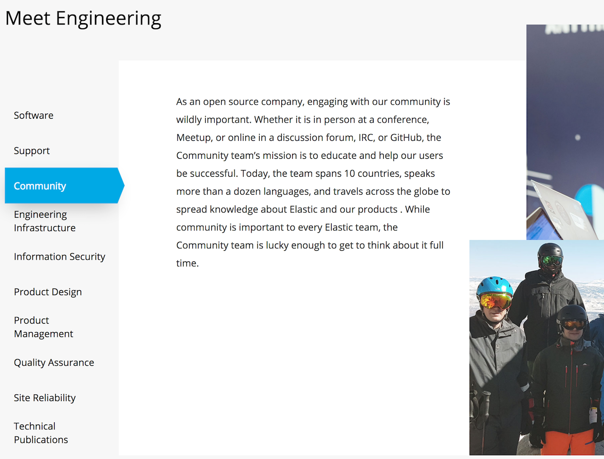
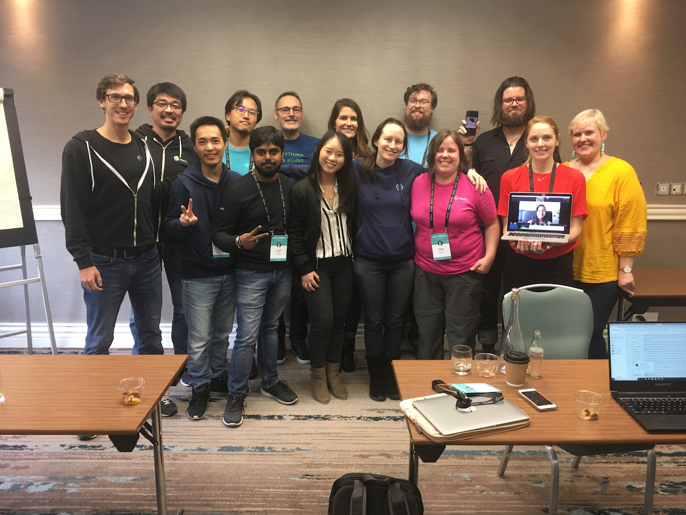
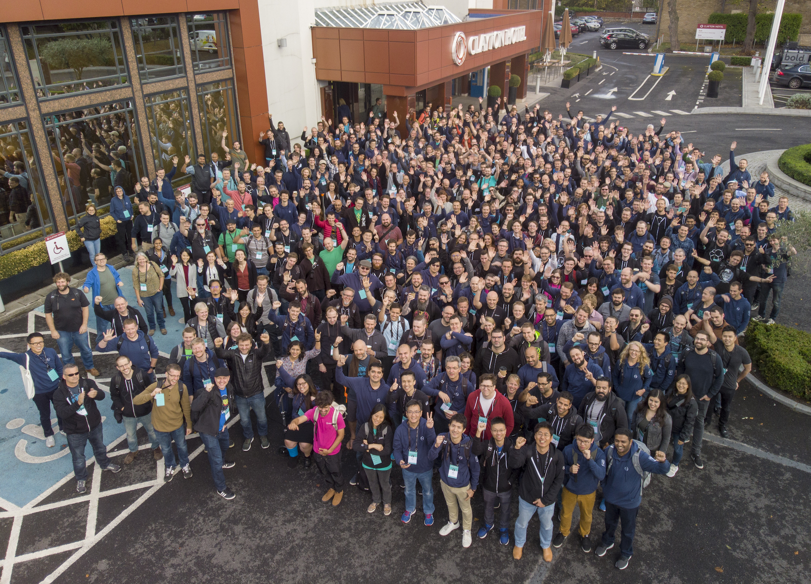

저는 지금 Elastic 에서 Community Engineer 라는 직책을 맡고 있습니다. 주 업무는 개발자 커뮤니티를 지원하는 일이고요 (물론 저는 한국에 직원이 많이 없어서 이런 저런 다른 일들도 많이 합니다), 다른 회사에서는 Evangelist 혹은 Developer Advocate 이라는 직함을 쓰는 곳도 있습니다. 저도 예전에는 전도사(Evangelist) 직함을 사용했었습니다.
소속되어 있는 팀도 지금은 Community Team 이라고 하는데, 예전 팀 이름은 DevRel Team 이었습니다. 처음 입사할 때는 7명이었는데 사람들이 나가고, 들어오고, 팀 옮기고 하면서 지금은 17명 입니다. 아직은 기업에서 Community 팀을 따로 운영하지 않는 곳이 많이 있지만, Elastic은 Community 팀을 매우 중요하게 생각합니다. 홈페이지의 엔지니어 팀 소개에도 당당히 3번째로 올라와 있습니다.

새 입사 직원들의 입문 교육때도 Community Team 에 대해 이야기하는 시간이 별도로 있고, 가끔은 저희 팀 미팅에 CEO(창업자)인 Shay Banon이 참여하기도 합니다. 그리고 제 매니저인 저희 팀 리더도 대부분의 리더쉽 미팅에 참여하며 꽤 중요한 발언들을 하곤 합니다.
Community Team은 팀원들의 역할이 제각각이라 Job을 정의하는것이 쉽지가 않습니다. 팀 안에 크게는 Advocate 과 Program 팀이 나누어져 있는데, Program 팀은 일반 Community 들을 찾아내고, 필요한 도움을 주는것이 주 역할이고, Advocate 은 컨퍼런스나 밋업에서 저희 기술 소개를 하는것이 주 역할입니다. 저는 Advocate 이지만 한국에서는 Program도 같이 겸하고 있습니다.

Community Team 은 저희 회사에서 Distributed 비중이 가장 큰 팀입니다. 17명의 직원이 14개 국가, 11개의 서로 다른 타임존에서 근무를 하고 있습니다. 각자 지역에서 하는 일도 다르고, 역할의 비중도 다르다보니, 저희는 회사가 정한 업무나 매니저와 함께 일을 정하는 것이 아니라, 대부분은 개개인이 스스로 일을 찾아서 하는 편입니다. 간혹 program 팀원이 어느 지역에 어떤 컨퍼런스나 밋업이 있다고 찾아서 알려주고 가서 발표좀 해 달라고 요청이 오기도 하지만, 보통은 각자 로컬에 있는 이벤트들을 직접 찾아서 발표 신청하고, 발표 준비해서 발표하고, 끝나면 이벤트 정리하는 일들을 각각 하는 편입니다.
이런 식으로 일을 하다 보니 팀원들마다 하는 일의 분량도, 비중도 다릅니다. 특히 저 같은 경우 한국에 직원이 많지 않다보니 서포트, 교육, 기술영업도 많이 하는데, 저희 유럽에 있는 팀원들의 경우는 1년에 컨퍼런스, 밋업에서 발표하는 횟수가 50번 정도 됩니다. 그래서 저희는 개인 평가 지표라는 것이 없습니다. 각자가 하는 일의 비중이 다르다보니 비교가 쉽지 않습니다. 좋은 점은 자유도가 높아 목표달성에 대한 스트레스가 적고, 나쁘게 말하면 승진이나 연봉 상승의 기회가 적습니다.
팀원들마다 각자 고충이 있겠지만 저희 팀원들이 하는 가장 큰 고민은 오늘 제목처럼
나는 과연 SW Engineer 라고 말할 수 있을까?
하는 것입니다.
저희 advocate 팀원들도 대부분 이전 직장에서는 프로그램 개발 일을 하던 사람들이었습니다. 커뮤니티 활동이 좋아서 지금은 커뮤니티 활동이 직업이 되었지만, 마음 한 구석에는 *그래도 엔지니어인데, 이렇게 개발에 손을 놔도 되나… 하는 생각들을 대부분 하고 있습니다. 저 역시 마찬가지이고요.
지금은 저도 컴퓨터로 하는 생산 작업들은
- 발표/교육 자료 만들기
- 데모 만들기
- 블로그 쓰기
정도입니다. 물론 써 놓은 블로그들과, 데모를 만들면서 작업한 설정파일 등이 나중에 서포트나 컨설팅, 교육 등을 할때 정말 유용하게 쓰이고는 있습니다. 그래도 마지막으로 뭔가 돌아가는 프로그램을 만들어본건 언제인지 기억도 잘 안 나네요.
하지만 Elastic 에서 만큼은 Community Engineer 라는 업무에 자부심을 가지고 일할 수 있을것 같습니다. 이유는 크게 두가지 입니다.
1. 엔지니어로서 동료들에게 인정을 받는다
요즘 기업들 마다 SW Engineer 구하려고 난리입니다. 좋은 프로그래머 구하기가 하늘의 별따기라고 하지요. 비전공자이거나 심지어 다른 업무를 하던 사람들도 요즘은 코딩을 배워 프로그래머가 되려고 하는 사람들도 많습니다. 또 예전처럼 주니어때는 코딩을 하다가 연차가 오르면 관리자로 가고 하지 않고, 요즘은 코딩을 오래 한 사람들의 경험을 그만큼 인정하고 대우하는 경우도 많아진 것 같습니다. 최근 분위기가 이렇다보니 은연중에 코딩에 손을 놓고, 따라가기가 벅찬 사람들은 좌절감을 느낄수도 있을것 같습니다.
Elastic에는 2018년 10월 현재 1,100 명 정도의 직원이 있는데 60% 정도가 엔지니어입니다. 엔지니어들 중에는 코드를 짜는 엔지니어들이 대다수이지만, 주 업무가 그렇지 않은 엔지니어들도 많습니다. 대표적으로
- 기술지원(support) 엔지니어
- 커뮤니티 엔지니어
- 교육 엔지니어
- 컨설턴트
- 솔루션 아키텍트
등이 있습니다.
제가 Elastic은 정말 멋진 회사라고 생각하는 이유 중 하나가, 업무의 경중을 가리지 않고 서로 존중하는 모습들 때문에 그렇습니다. 회사 리더들이 정한 정책같은 이유 때문이 아니라 순수하게 동료들끼리 서로의 직업을 존중해줍니다.
저는 Community Engineer 이지만 항상 처음 만나는 회사 동료들과 제 소개를 하면 다른 엔지니어들로부터 “정말 멋진 일을 하고 있군! 우리 회사가 성장하기 위해서 커뮤니티팀이 정말 중요하지” 라는 이야기를 자주 듣습니다. 제가 2015년에 입사하고 그 동안 한국에서 했던 커뮤니티 밋업, 행사에 대한 일이나, 회사 홈페이지 번역 리뷰 한 일 등을 이야기 하면 “그건 종민이 너 아니면 누구도 너 만큼 해 낼 수 없는 일이었고, 네가 우리 동료라서 정말 행운이다.” 라는 이야기도 여러번 들었습니다.
저 뿐만이 아니라 기술지원 엔지니어 같은 경우도 비슷합니다. 한국에 현재 기술지원(support) 엔지니어도 3분이 계신데, 다들 유망한 회사에서 오신 실력있고 인정받는 개발자 분들이었습니다. 사실 개발을 주 업무로 하시던 분들에게 서포트 엔지니어로 합류를 권해드리는게 쉽게 내키는 일은 아니지만, Elastic의 서포트 엔지니어들은 충분히 그럴만한 가치가 있다고 생각합니다.
저희 회사의 첫 Support Engineer 이자, 현재 서포트 팀의 최고 헤드인 Marty 에게 예전에 들었던 이야기 입니다. Elastic에 직원이 스무명 남짓이던 시절, Elastic 에서 서포트팀을 맡아 줄 사람이 필요하다고 Elastic에 합류한 예전 직장동료가 Marty를 스카우트 하러 왔습니다. 합류하기로 결정하고 Elastic으로 가면서
“서포트는 보통 개발자들이 자기가 하기 귀찮아하는 고객 상대 같은 일들을 대신 처리 해 주는 일이겠지”
라는 생각으로 왔는데, 처음에 오자마자 개발자들이 모두 자기에게 몰려와서
“정말 잘 왔다! 이런 중요한 직책을 맡아줘서 너무 고맙고, 앞으로 우리 회사의 성공은 너의 어깨에 달려있다. 잘 부탁한다.”
이런 이야기들을 막 해주길래 이게 무슨 상황이지? 여긴 대체 뭐 하는 회사야? 라는 생각을 했다고 합니다.
올해 저희 서포트 엔지니어들 끼리 summit을 하느라 모두 출장중일 때 개발팀과 기타 다른 엔지니어들이 1주일 동안 자신들의 업무를 중지하고 서포트 엔지니어들의 일을 대신 한 적이 있었는데 슬랙의 서포트 채널에 계속 보이던 이야기가
“서포트 엔지니어들은 이렇게 어려운 일들을 어떻게 매일 처리하고 있는지, 정말 존경스럽다.”
라는 대화들을 자주 했습니다.
개발자가 아니라서 인정받기 힘들것 같은 걱정은 Elastic에 있는 동안은 하지 않아도 될 것 같습니다.
그리고 두 번째는
2. 뛰어난 개발자가 많다
입니다.
이상하게 들리실지 모르지만, 회사에 너무 뛰어난 개발자들이 많아서, 사실 제가 개발로 그분들을 따라잡을 수 있을것 같다는 생각이 들지 않습니다.
그래도 저 역시 나름 이전 직장에서는 개발 좀 한다는 이야기 들으면서 다니긴 했는데, Elastic에는 탑 레벨 아파치 커미터도 10명이나 있고, 한글 형태소 분석기가 필요해서 만들어달라고 했더니, 기존 형태소 분석기 소스만 적당히 보고 2주만에 버그도 없고 10배나 가볍고 빠른 분석기를 만들어 오는 개발자 라던가, 출장 비행기에서 혼자 데이터 분석 시각 툴을 만드는 개발자 같은 소위 굇수들이 있어서 사실 여기서 내가 궂이 열등감 느끼며 개발할 필요는 없겠다 라는 생각이 들었습니다. 저는 계속 제가 좋아하는 일 하면서 즐겁게 지내면 될 것 같습니다.
그래도 올해 파이콘에서 하이퍼커넥트 에서 주관한 젬 줍기 배틀에 참석해서 오랫만에 코드 한번 짜 봤는데, 순위가 중간 이상은 갔습니다. 감을 많이 잃긴 했지만 다시 하면 할 수는 있을것 같더군요. (사실 파이썬 코딩은 이 날 처음 해봤습니다.)
여하튼, 도전적인 포스트의 제목에 대한 제 결론은
SW Engineer 로 부터 멀어질 것 같은 불안감이 스스로에게서 나왔지만, 좋은 동료들이 있어 극복 해 낼 수 있을것 같다.
정도로 마무리 하겠습니다.
마지막 사진은 이번에 더블린에서 찍은 저희 엔지니어들의 모습입니다. 사람이 점점 많아져서 제작년에는 사진작가가 사다리를 놓고 찍고, 작년에는 건물 3층 창문에서 찍었는데, 올해는 드론을 날려서 찍었습니다.
